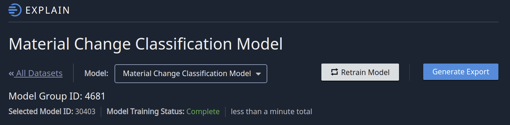

Key Concepts and Terminology
Datasets
Think of Datasets as a container to hold data from any of the following…
A CSV file with just a few or a few thousand rows
One or more PDF files
One or more TIF files
Datasets are the core of most things you do in the Indico Platform and Client Library.
Model Groups
Model Groups are a container for multiple models associated with a particular teach task. When you create a new classification or extraction model on a dataset, you are actually creating a Model Group. The Indico Platform keeps every model you train. For instance, if you click Retrain on a model group’s Review page, the platform creates an additional model within the Model Group. All of your old models are saved. While your new model is training, the prior version remains available for predictions. If the new model fails to train for some reason then the prior model continues to be available.
Several Client Library functions ask for either a “Selected Model ID” or “Model Group ID”. You can find the correct ID with either the UI or the Client Library. In the UI, navigate to your model’s “EXPLAIN” page (i.e. where you see performance metrics) and you will find both IDs. See image below.
In the Client Library, you can find model group ids by calling ListDatasets.
Selected Model
The Selected Model ID is just the ID of the Model Group’s current model. You can find it at the top of the Model Group’s Review page.
Label Sets
Label Sets are the collection of labels assigned to your Dataset. Anytime you create a new Teach task, you are also making a new Label Set.